静止画モック（コスト0円・方向性確認用）。本制作では全カットを動画化し、文字は正本から載せ直します。
| A01 2秒 | 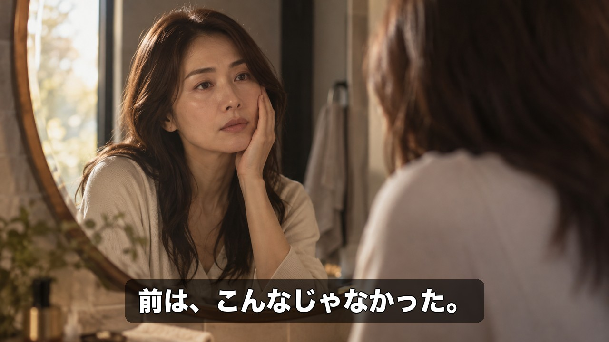 | 2秒フック／鏡の前（ビフォー＝日常の疲れ・コンプレックス） 前は、こんなじゃなかった。 |
| A02 3秒 | 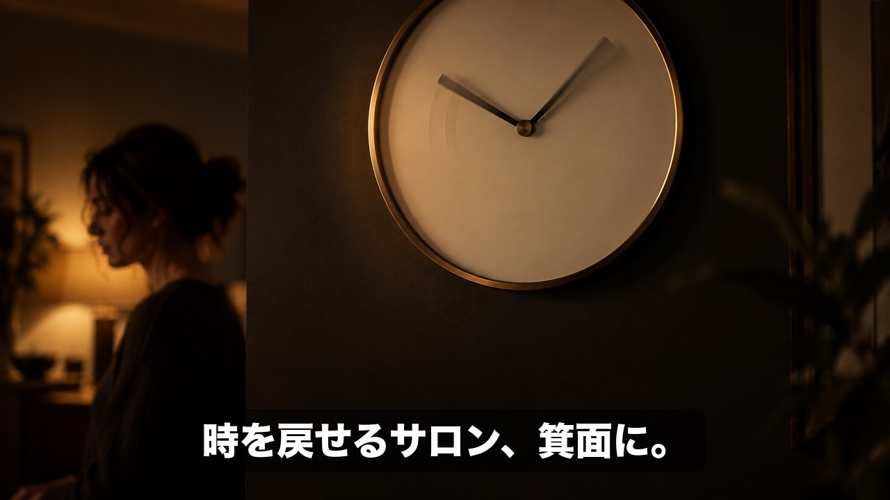 | 5秒フック／時計の針が戻る（2秒以内） 時を戻せるサロン、箕面に。 |
| A03 4秒 | 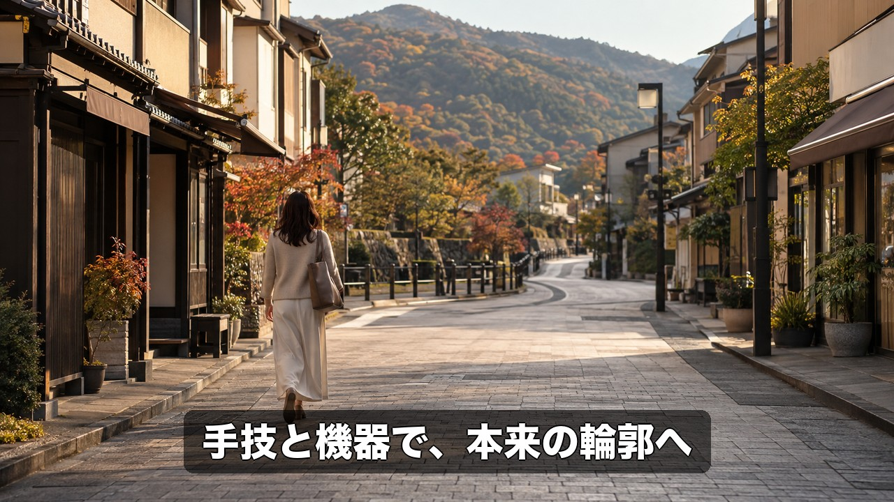 | 箕面の通りを歩く後ろ姿。NA「注射も、手術も、使わない。」※『ボトックス・ヒアルロン酸を使わない』の文字表記は決定依頼シート7で確認後に差し替え 手技と機器で、本来の輪郭へ |
| A04 4秒 | 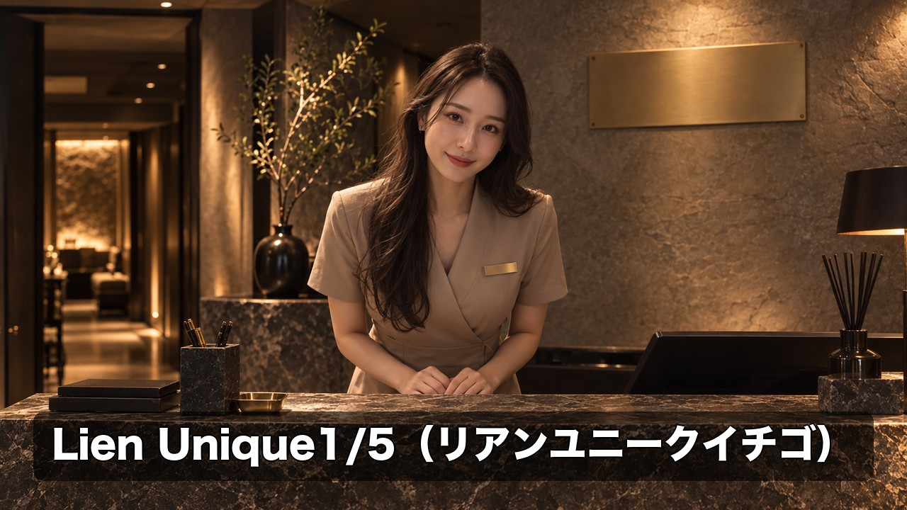 | 受付・施術者が迎える。NA「Lien Unique1/5。」 Lien Unique1/5（リアンユニークイチゴ） |
| A05 3秒 | 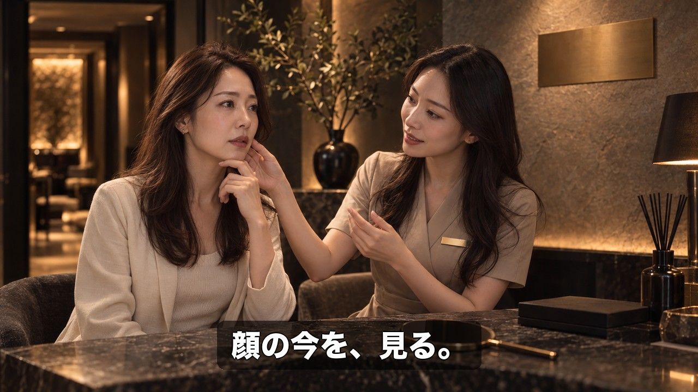 | カウンセリング。NA「ひとりひとりの顔の“今”を見て、」 顔の今を、見る。 |
| A06 4秒 | 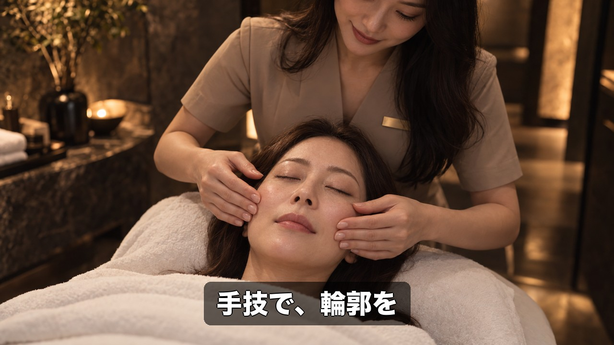 | 施術1/3 手技。NA「手で、輪郭を整え、」 手技で、輪郭を |
| A07 4秒 | 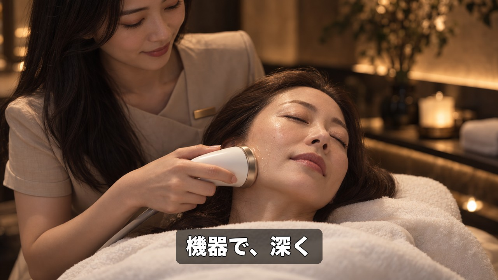 | 施術2/3 機器（ロゴなし）。NA「機器で、深く、心地よく。」 機器で、深く |
| A08 3秒 | 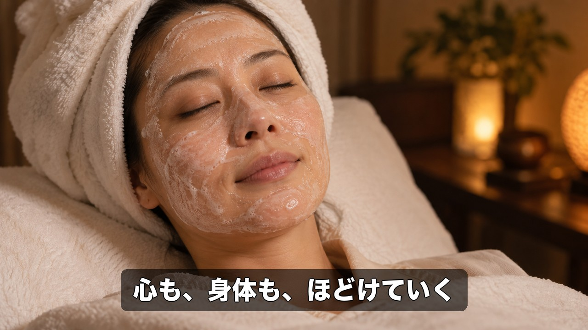 | 施術3/3 炭酸パック。NA「内側から、めぐりを整える。」10/6議事録『心と身体のストレス解放』を反映 心も、身体も、ほどけていく |
| A09 5秒 | 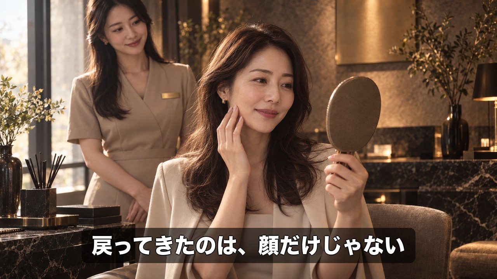 | 施術後・受付カウンター前で手鏡を見て微笑む（アフター＝自信を取り戻した笑顔）。感情ピーク 戻ってきたのは、顔だけじゃない |
| A10 6秒 | 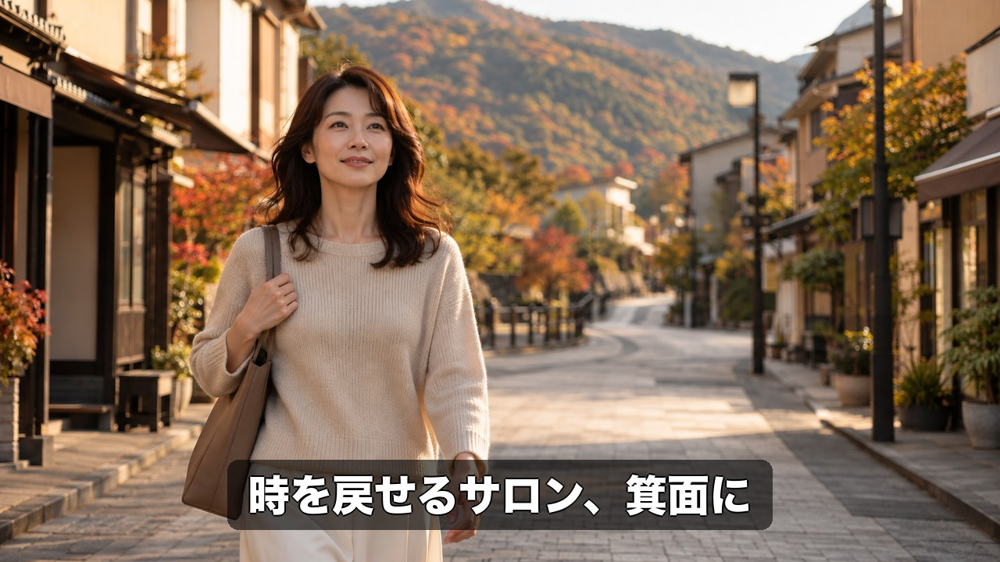 | 通りを正面から歩いてくる。NA「時を戻せるサロン、箕面に。」 時を戻せるサロン、箕面に |
| A11 7秒 | 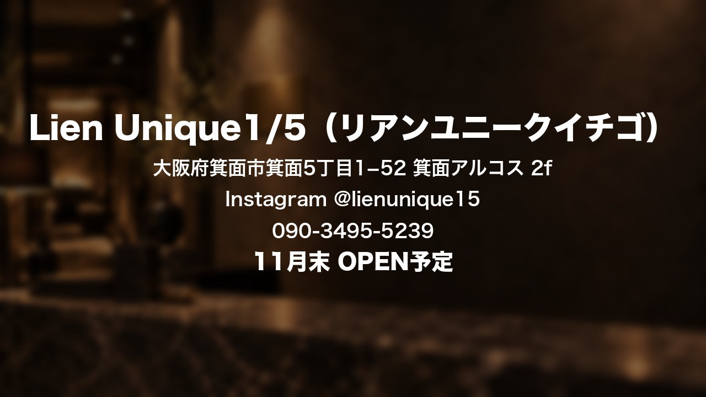 | エンドカード。NA「Lien Unique1/5、まもなくオープン。」オープン日は11月末予定（10/6議事録）→確定後差し替え Lien Unique1/5（リアンユニークイチゴ）／大阪府箕面市箕面5丁目1−52 箕面アルコス 2f／Instagram @lienunique15／090-3495-5239／11月末 OPEN予定 |